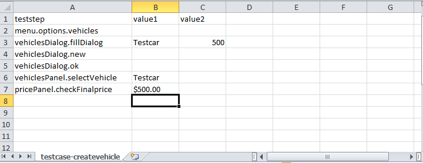
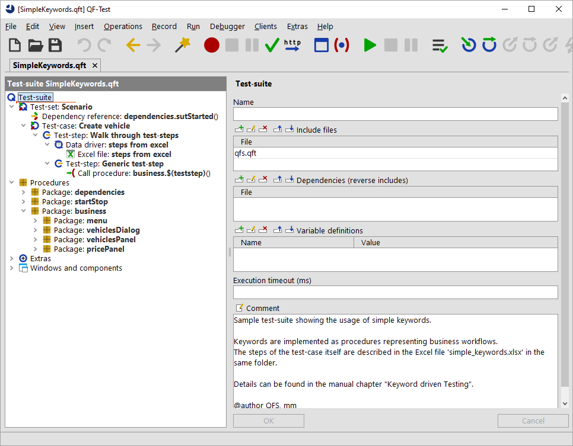
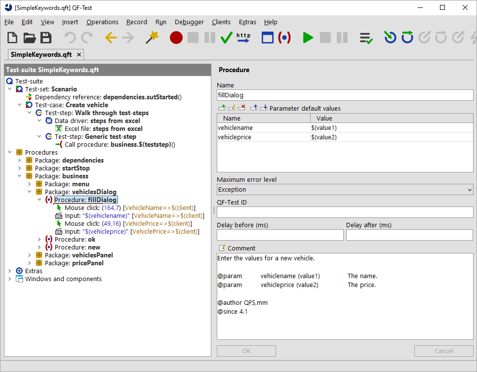

| Version 6.0.3 |
As stated in the previous section business-related procedures represent a real business workflow in your application.
You can find a sample at qftest-6.0.3/demo/keywords/simple_business/
SimpleKeywords.qft.
The respective test-plan can be found at
qftest-6.0.3/demo/keywords/simple_business/
simple_keywords.xlsx.
Please take care to copy the demo folder to a project-related folder first and modify them there.
The sample shows the "Create vehicle" test-case of the QF-Test CarConfigurator. It consists of following test-steps:
Let's take a look at the Excel file now:
|
|  | ||
|
| Figure 28.1: Excel file business-related keywords | ||
As QF-Test can read excel files row by row, we have decided to go for that excel structure. Reading that file follows the data-driven concept (see section 38.4). It's also possible to use another structure of the excel file, but then we lose the advantage of using the QF-Test functionality directly without any scripts or if-conditions.
In the first row we find the values teststep, value1 and value2.
That row will be interpreted as variable names by QF-Test. Every subsequent row will then contain respective values for those variables.
This mechanism allows QF-Test to walk through that Excel file in order to execute the planned test-steps.
Now let's take a look at the test-suite SimpleKeywords.qft.
The test-suite looks like this:
|
|  | ||
|
| Figure 28.2: Test-suite business-related keywords | ||
|
|
|
||||||||||||||||||||
|
| Table 28.5: Structure of SimpleKeywords.qft | ||||||||||||||||||||
All required procedures are implemented in the package business. In order to allow a simple variable definition any steps in Excel use the variables
value1 and value2. Every procedure maps those generic names to the specific parameters of the procedure itself.
|
|  | ||
|
| Figure 28.3: Procedure fillDialog | ||
This concept requires that any used keyword has to be implemented in QF-Test already before using it. If your steps require more than two parameters you need to extend the excel file with more columns. In addition you need one test-case node in QF-Test per test-case in Excel. You can make this more flexible, see section 28.5.
| Last update: 9/6/2022 Copyright © 1999-2022 Quality First Software GmbH |